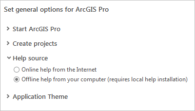

Access the help
ArcGIS Pro help is provided through an online help system and an offline help system. If you can't access either system, a compact version of the help system can be used instead. Context-sensitive help is provided on the user interface in the form of ScreenTips, messages, and pop-ups. The Help tab on the ribbon provides access to tools, , and contacts.
Open the help
You can open the help in a number of ways:
- At the top of the application window, click the View Help button. This button is always available.
- From anywhere in the application, press the F1 key.
- In an open project, on the ribbon, click the Help tab. In the Help group, click Help and click Online Help to view the help in a web browser or Offline Help to open the help in a separate viewer.
- Click the Project tab. On the Settings page, click the Help side tab.
- On the start page, click the Learning Resources tab
 and click Help .
and click Help . - Open a web browser to https://pro.arcgis.com.
Set the help source
By default, ArcGIS Pro uses the online help system. If you work offline or in an internet-restricted environment, you can change the help source to the offline help system. As needed, you can switch the help source.
The offline help system is an application that must be downloaded and installed. See Download ArcGIS Pro for more information.
If you open the help system from the Help tab on the ribbon, you can open either help system, regardless of which one is set as the help source.
- Open the ArcGIS Pro settings page in one of the following ways:
- From an open project, click the Project tab on the ribbon.
- From the start page, click the Settings tab
 .
.
- In the settings list on the left, click Options.
- On the Options dialog box, under Application, click General.
- Under Set general options for ArcGIS Pro, expand Help source and click an option:
- Online help from the Internet.
- Offline help from your computer (requires local help installation).

 Note:
Note:If the offline help system is not installed, the option to set it as the help source is not available.
- Click OK.